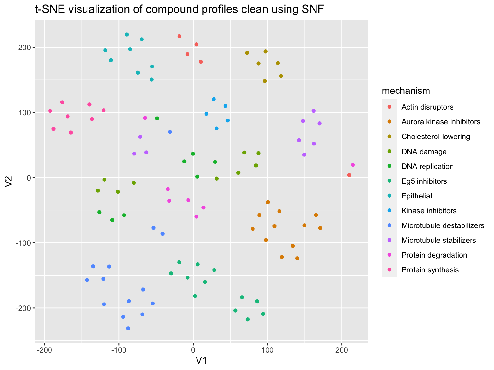
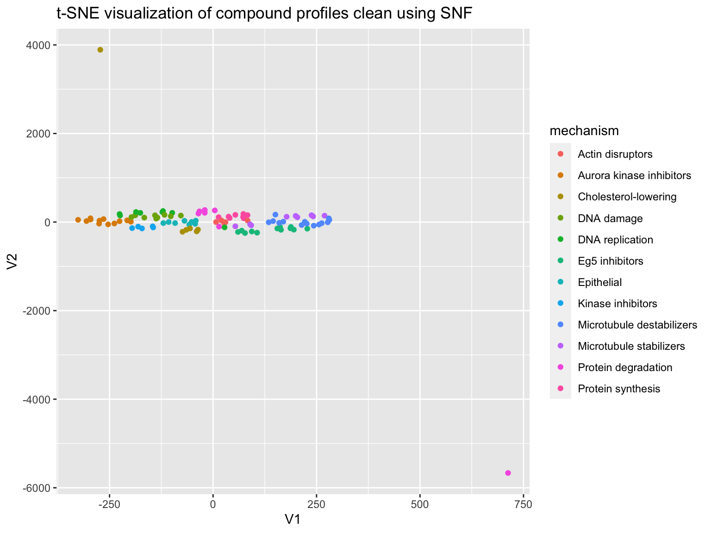

Improving predicting compounds mechanism-of-action by morphological profiling using SNF
Tim Becker and Mohammad Rohban
2020-04-30
Source:vignettes/predict_moa_using_snf.Rmd
predict_moa_using_snf.RmdThis vignette demonstrates predicting compound mechanism-of-action using morphological profiling data. The data is “cleaned up” using the similarity network fusion algorithm (SNF). This vignette bases on the vignette predict_moa. See the vignette single_cell_analysis for details about this dataset.
library(dplyr) library(magrittr) library(ggplot2) library(stringr) library(cytominergallery) library(SNFtool)
Load data
Per-well profiles computed in single_cell_analysis are loaded, as well as metadata associated with these profiles (obtained from BBBC021). This is the same data as used in the vignette predict_moa.
profiles <- readr::read_csv(system.file("extdata", "ljosa_jbiomolscreen_2013_per_well_mean.csv.gz", package = "cytominergallery")) moa <- readr::read_csv(system.file("extdata", "BBBC021_v1_moa.csv", package = "cytominergallery")) %>% rename(Image_Metadata_Compound = compound, Image_Metadata_Concentration = concentration, Image_Metadata_MoA = moa ) metadata <- readr::read_csv(system.file("extdata", "BBBC021_v1_image.csv.gz", package = "cytominergallery")) %>% rename(Image_Metadata_Plate = Image_Metadata_Plate_DAPI, Image_Metadata_Well = Image_Metadata_Well_DAPI ) %>% select(matches("^Image_Metadata")) %>% inner_join(moa) %>% distinct() profiles %<>% inner_join(metadata) variables <- colnames(profiles) %>% str_subset("^Nuclei_|^Cells_|^Cytoplasm_")
Feature selection
Next, lets filter the set of features based on various measures of quality
Remove features that have poor correlation across replicates. To do so, lets first compute the correlations.
doParallel::registerDoParallel(cores = 4) feature_replicate_correlations <- profiles %>% cytominer::variable_importance( variables = variables, strata = c("Image_Metadata_Compound", "Image_Metadata_Concentration"), replicates = 3, cores = 2)
Similar to the predict_moa vignette, we select a threshold and remove features that have a replicate correlation lower than that threshold.
profiles %<>% select_(.dots = setdiff(x = colnames(profiles), y = feature_replicate_correlations %>% filter(median < 0.5) %>% magrittr::extract2("variable")) )
## Warning: select_() is deprecated.
## Please use select() instead
##
## The 'programming' vignette or the tidyeval book can help you
## to program with select() : https://tidyeval.tidyverse.org
## This warning is displayed once per session.variables <- colnames(profiles) %>% str_subset("^Nuclei_|^Cells_|^Cytoplasm_")
Filter based on correlation between features, similar to predict_moa.
profiles <- cytominer::variable_select( population = profiles, variables = variables, sample = profiles, operation = "correlation_threshold", cutoff = 0.95) %>% collect()
## INFO [2020-04-30 00:17:32] excluded:
## INFO [2020-04-30 00:17:32] Cells_AreaShape_MaximumRadius
## INFO [2020-04-30 00:17:32] Cells_AreaShape_MeanRadius
## INFO [2020-04-30 00:17:32] Cells_AreaShape_MedianRadius
## INFO [2020-04-30 00:17:32] Cells_AreaShape_MinFeretDiameter
## INFO [2020-04-30 00:17:32] Cells_AreaShape_MinorAxisLength
## INFO [2020-04-30 00:17:32] Cells_Intensity_MaxIntensity_CorrActin
## INFO [2020-04-30 00:17:32] Cells_Intensity_MaxIntensity_CorrTub
## INFO [2020-04-30 00:17:32] Cells_Intensity_MeanIntensityEdge_CorrTub
## INFO [2020-04-30 00:17:32] Cells_Intensity_MeanIntensity_CorrActin
## INFO [2020-04-30 00:17:32] Cells_Intensity_MeanIntensity_CorrTub
## INFO [2020-04-30 00:17:32] Cells_Intensity_MedianIntensity_CorrActin
## INFO [2020-04-30 00:17:32] Cells_Intensity_MedianIntensity_CorrTub
## INFO [2020-04-30 00:17:32] Cells_Intensity_MinIntensity_CorrActin
## INFO [2020-04-30 00:17:32] Cells_Intensity_StdIntensityEdge_CorrActin
## INFO [2020-04-30 00:17:32] Cells_Intensity_StdIntensityEdge_CorrTub
## INFO [2020-04-30 00:17:32] Cells_Intensity_StdIntensity_CorrActin
## INFO [2020-04-30 00:17:32] Cells_Intensity_StdIntensity_CorrTub
## INFO [2020-04-30 00:17:32] Cells_Intensity_UpperQuartileIntensity_CorrActin
## INFO [2020-04-30 00:17:32] Cells_Intensity_UpperQuartileIntensity_CorrTub
## INFO [2020-04-30 00:17:32] Cells_Neighbors_NumberOfNeighbors_3
## INFO [2020-04-30 00:17:32] Cells_Texture_SumVariance_CorrActin_3_0
## INFO [2020-04-30 00:17:32] Cells_Texture_Variance_CorrActin_10_0
## INFO [2020-04-30 00:17:32] Cells_Texture_Variance_CorrActin_3_0
## INFO [2020-04-30 00:17:32] Cells_Texture_Variance_CorrTub_10_0
## INFO [2020-04-30 00:17:32] Cytoplasm_AreaShape_Area
## INFO [2020-04-30 00:17:32] Cytoplasm_AreaShape_MajorAxisLength
## INFO [2020-04-30 00:17:32] Cytoplasm_AreaShape_MaxFeretDiameter
## INFO [2020-04-30 00:17:32] Cytoplasm_AreaShape_MaximumRadius
## INFO [2020-04-30 00:17:32] Cytoplasm_AreaShape_MeanRadius
## INFO [2020-04-30 00:17:32] Cytoplasm_AreaShape_MedianRadius
## INFO [2020-04-30 00:17:32] Cytoplasm_AreaShape_MinFeretDiameter
## INFO [2020-04-30 00:17:32] Cytoplasm_AreaShape_MinorAxisLength
## INFO [2020-04-30 00:17:32] Cytoplasm_AreaShape_Solidity
## INFO [2020-04-30 00:17:32] Cytoplasm_AreaShape_Zernike_0_0
## INFO [2020-04-30 00:17:32] Cytoplasm_Intensity_IntegratedIntensityEdge_CorrActin
## INFO [2020-04-30 00:17:32] Cytoplasm_Intensity_IntegratedIntensityEdge_CorrTub
## INFO [2020-04-30 00:17:32] Cytoplasm_Intensity_IntegratedIntensity_CorrTub
## INFO [2020-04-30 00:17:32] Cytoplasm_Intensity_MADIntensity_CorrActin
## INFO [2020-04-30 00:17:32] Cytoplasm_Intensity_MADIntensity_CorrTub
## INFO [2020-04-30 00:17:32] Cytoplasm_Intensity_MassDisplacement_CorrActin
## INFO [2020-04-30 00:17:32] Cytoplasm_Intensity_MassDisplacement_CorrTub
## INFO [2020-04-30 00:17:32] Cytoplasm_Intensity_MaxIntensityEdge_CorrActin
## INFO [2020-04-30 00:17:32] Cytoplasm_Intensity_MaxIntensity_CorrActin
## INFO [2020-04-30 00:17:32] Cytoplasm_Intensity_MaxIntensity_CorrTub
## INFO [2020-04-30 00:17:32] Cytoplasm_Intensity_MeanIntensityEdge_CorrActin
## INFO [2020-04-30 00:17:32] Cytoplasm_Intensity_MeanIntensityEdge_CorrTub
## INFO [2020-04-30 00:17:32] Cytoplasm_Intensity_MeanIntensity_CorrActin
## INFO [2020-04-30 00:17:32] Cytoplasm_Intensity_MeanIntensity_CorrTub
## INFO [2020-04-30 00:17:32] Cytoplasm_Intensity_MedianIntensity_CorrActin
## INFO [2020-04-30 00:17:32] Cytoplasm_Intensity_MedianIntensity_CorrTub
## INFO [2020-04-30 00:17:32] Cytoplasm_Intensity_MinIntensityEdge_CorrActin
## INFO [2020-04-30 00:17:32] Cytoplasm_Intensity_MinIntensityEdge_CorrTub
## INFO [2020-04-30 00:17:32] Cytoplasm_Intensity_MinIntensity_CorrActin
## INFO [2020-04-30 00:17:32] Cytoplasm_Intensity_MinIntensity_CorrTub
## INFO [2020-04-30 00:17:32] Cytoplasm_Intensity_StdIntensityEdge_CorrActin
## INFO [2020-04-30 00:17:32] Cytoplasm_Intensity_StdIntensityEdge_CorrTub
## INFO [2020-04-30 00:17:32] Cytoplasm_Intensity_StdIntensity_CorrActin
## INFO [2020-04-30 00:17:32] Cytoplasm_Intensity_StdIntensity_CorrTub
## INFO [2020-04-30 00:17:32] Cytoplasm_Intensity_UpperQuartileIntensity_CorrActin
## INFO [2020-04-30 00:17:32] Cytoplasm_Intensity_UpperQuartileIntensity_CorrTub
## INFO [2020-04-30 00:17:33] Cytoplasm_Texture_DifferenceEntropy_CorrActin_3_0
## INFO [2020-04-30 00:17:33] Cytoplasm_Texture_DifferenceVariance_CorrTub_10_0
## INFO [2020-04-30 00:17:33] Cytoplasm_Texture_DifferenceVariance_CorrTub_3_0
## INFO [2020-04-30 00:17:33] Cytoplasm_Texture_InfoMeas2_CorrActin_3_0
## INFO [2020-04-30 00:17:33] Cytoplasm_Texture_SumAverage_CorrTub_3_0
## INFO [2020-04-30 00:17:33] Cytoplasm_Texture_Variance_CorrTub_10_0
## INFO [2020-04-30 00:17:33] Nuclei_AreaShape_MajorAxisLength
## INFO [2020-04-30 00:17:33] Nuclei_AreaShape_MaxFeretDiameter
## INFO [2020-04-30 00:17:33] Nuclei_AreaShape_MeanRadius
## INFO [2020-04-30 00:17:33] Nuclei_AreaShape_MinorAxisLength
## INFO [2020-04-30 00:17:33] Nuclei_AreaShape_Perimeter
## INFO [2020-04-30 00:17:33] Nuclei_AreaShape_Zernike_3_3
## INFO [2020-04-30 00:17:33] Nuclei_AreaShape_Zernike_4_4
## INFO [2020-04-30 00:17:33] Nuclei_AreaShape_Zernike_5_3
## INFO [2020-04-30 00:17:33] Nuclei_AreaShape_Zernike_6_6
## INFO [2020-04-30 00:17:33] Nuclei_AreaShape_Zernike_7_3
## INFO [2020-04-30 00:17:33] Nuclei_AreaShape_Zernike_7_5
## INFO [2020-04-30 00:17:33] Nuclei_AreaShape_Zernike_7_7
## INFO [2020-04-30 00:17:33] Nuclei_AreaShape_Zernike_9_7
## INFO [2020-04-30 00:17:33] Nuclei_AreaShape_Zernike_9_9
## INFO [2020-04-30 00:17:33] Nuclei_Intensity_IntegratedIntensityEdge_CorrActin
## INFO [2020-04-30 00:17:33] Nuclei_Intensity_IntegratedIntensityEdge_CorrTub
## INFO [2020-04-30 00:17:33] Nuclei_Intensity_IntegratedIntensity_CorrActin
## INFO [2020-04-30 00:17:33] Nuclei_Intensity_IntegratedIntensity_CorrTub
## INFO [2020-04-30 00:17:33] Nuclei_Intensity_LowerQuartileIntensity_CorrActin
## INFO [2020-04-30 00:17:33] Nuclei_Intensity_LowerQuartileIntensity_CorrTub
## INFO [2020-04-30 00:17:33] Nuclei_Intensity_MADIntensity_CorrActin
## INFO [2020-04-30 00:17:33] Nuclei_Intensity_MADIntensity_CorrTub
## INFO [2020-04-30 00:17:33] Nuclei_Intensity_MaxIntensityEdge_CorrActin
## INFO [2020-04-30 00:17:33] Nuclei_Intensity_MaxIntensityEdge_CorrTub
## INFO [2020-04-30 00:17:33] Nuclei_Intensity_MaxIntensity_CorrActin
## INFO [2020-04-30 00:17:33] Nuclei_Intensity_MaxIntensity_CorrTub
## INFO [2020-04-30 00:17:33] Nuclei_Intensity_MeanIntensityEdge_CorrActin
## INFO [2020-04-30 00:17:33] Nuclei_Intensity_MeanIntensityEdge_CorrDAPI
## INFO [2020-04-30 00:17:33] Nuclei_Intensity_MeanIntensityEdge_CorrTub
## INFO [2020-04-30 00:17:33] Nuclei_Intensity_MeanIntensity_CorrActin
## INFO [2020-04-30 00:17:33] Nuclei_Intensity_MeanIntensity_CorrDAPI
## INFO [2020-04-30 00:17:33] Nuclei_Intensity_MeanIntensity_CorrTub
## INFO [2020-04-30 00:17:33] Nuclei_Intensity_MedianIntensity_CorrActin
## INFO [2020-04-30 00:17:33] Nuclei_Intensity_MedianIntensity_CorrDAPI
## INFO [2020-04-30 00:17:33] Nuclei_Intensity_MedianIntensity_CorrTub
## INFO [2020-04-30 00:17:33] Nuclei_Intensity_MinIntensityEdge_CorrActin
## INFO [2020-04-30 00:17:33] Nuclei_Intensity_MinIntensityEdge_CorrDAPI
## INFO [2020-04-30 00:17:33] Nuclei_Intensity_MinIntensity_CorrActin
## INFO [2020-04-30 00:17:33] Nuclei_Intensity_MinIntensity_CorrDAPI
## INFO [2020-04-30 00:17:33] Nuclei_Intensity_MinIntensity_CorrTub
## INFO [2020-04-30 00:17:33] Nuclei_Intensity_StdIntensityEdge_CorrActin
## INFO [2020-04-30 00:17:33] Nuclei_Intensity_StdIntensity_CorrActin
## INFO [2020-04-30 00:17:33] Nuclei_Intensity_StdIntensity_CorrDAPI
## INFO [2020-04-30 00:17:33] Nuclei_Intensity_StdIntensity_CorrTub
## INFO [2020-04-30 00:17:33] Nuclei_Intensity_UpperQuartileIntensity_CorrActin
## INFO [2020-04-30 00:17:33] Nuclei_Intensity_UpperQuartileIntensity_CorrDAPI
## INFO [2020-04-30 00:17:33] Nuclei_Intensity_UpperQuartileIntensity_CorrTub
## INFO [2020-04-30 00:17:33] Nuclei_Neighbors_PercentTouching_10
## INFO [2020-04-30 00:17:33] Nuclei_Texture_InfoMeas2_CorrDAPI_3_0
## INFO [2020-04-30 00:17:33] Nuclei_Texture_Variance_CorrDAPI_3_0
## INFO [2020-04-30 00:17:33] Cells_AreaShape_Area
## INFO [2020-04-30 00:17:33] Cells_AreaShape_MajorAxisLength
## INFO [2020-04-30 00:17:33] Cells_AreaShape_MaxFeretDiameter
## INFO [2020-04-30 00:17:33] Cells_Intensity_LowerQuartileIntensity_CorrActin
## INFO [2020-04-30 00:17:33] Cells_Intensity_MADIntensity_CorrTub
## INFO [2020-04-30 00:17:33] Cells_Intensity_MaxIntensityEdge_CorrTub
## INFO [2020-04-30 00:17:33] Cells_Intensity_MinIntensityEdge_CorrTub
## INFO [2020-04-30 00:17:33] Cells_Intensity_MADIntensity_CorrActin
## INFO [2020-04-30 00:17:33] Cells_Neighbors_AngleBetweenNeighbors_10
## INFO [2020-04-30 00:17:33] Cells_Neighbors_FirstClosestDistance_10
## INFO [2020-04-30 00:17:33] Cells_Neighbors_NumberOfNeighbors_10
## INFO [2020-04-30 00:17:33] Cells_Neighbors_SecondClosestDistance_10
## INFO [2020-04-30 00:17:33] Cells_Texture_Contrast_CorrTub_10_0
## INFO [2020-04-30 00:17:33] Cells_Texture_InfoMeas1_CorrActin_3_0
## INFO [2020-04-30 00:17:33] Cells_Texture_SumVariance_CorrTub_3_0
## INFO [2020-04-30 00:17:33] Cytoplasm_AreaShape_Extent
## INFO [2020-04-30 00:17:33] Cells_AreaShape_Perimeter
## INFO [2020-04-30 00:17:33] Cells_Intensity_IntegratedIntensity_CorrActin
## INFO [2020-04-30 00:17:33] Cells_Intensity_MeanIntensityEdge_CorrActin
## INFO [2020-04-30 00:17:33] Cells_Intensity_LowerQuartileIntensity_CorrTub
## INFO [2020-04-30 00:17:33] Cytoplasm_Intensity_MaxIntensityEdge_CorrTub
## INFO [2020-04-30 00:17:33] Cells_Intensity_MaxIntensityEdge_CorrActin
## INFO [2020-04-30 00:17:33] Cells_Texture_AngularSecondMoment_CorrTub_3_0
## INFO [2020-04-30 00:17:33] Cells_Texture_Contrast_CorrActin_10_0
## INFO [2020-04-30 00:17:33] Cells_Texture_DifferenceVariance_CorrActin_10_0
## INFO [2020-04-30 00:17:33] Cells_Texture_DifferenceEntropy_CorrActin_3_0
## INFO [2020-04-30 00:17:33] Cytoplasm_Texture_AngularSecondMoment_CorrTub_10_0
## INFO [2020-04-30 00:17:33] Nuclei_AreaShape_MaximumRadius
## INFO [2020-04-30 00:17:33] Nuclei_AreaShape_MedianRadius
## INFO [2020-04-30 00:17:33] Nuclei_AreaShape_Zernike_3_1
## INFO [2020-04-30 00:17:33] Nuclei_AreaShape_Zernike_5_5
## INFO [2020-04-30 00:17:33] Nuclei_Intensity_MADIntensity_CorrDAPI
## INFO [2020-04-30 00:17:33] Nuclei_Intensity_MaxIntensityEdge_CorrDAPI
## INFO [2020-04-30 00:17:33] Nuclei_Intensity_MaxIntensity_CorrDAPI
## INFO [2020-04-30 00:17:33] Cells_Neighbors_AngleBetweenNeighbors_3
## INFO [2020-04-30 00:17:33] Nuclei_Neighbors_AngleBetweenNeighbors_10
## INFO [2020-04-30 00:17:33] Cells_Neighbors_FirstClosestDistance_3
## INFO [2020-04-30 00:17:33] Nuclei_Neighbors_FirstClosestDistance_10
## INFO [2020-04-30 00:17:33] Cells_Neighbors_SecondClosestDistance_3
## INFO [2020-04-30 00:17:33] Nuclei_Neighbors_SecondClosestDistance_10
## INFO [2020-04-30 00:17:33] Nuclei_Texture_AngularSecondMoment_CorrActin_3_0
## INFO [2020-04-30 00:17:33] Nuclei_Texture_InfoMeas1_CorrActin_10_0
## INFO [2020-04-30 00:17:33] Nuclei_Texture_InfoMeas1_CorrActin_3_0
## INFO [2020-04-30 00:17:33] Nuclei_Texture_InfoMeas1_CorrTub_3_0variables <- colnames(profiles) %>% str_subset("^Nuclei_|^Cells_|^Cytoplasm_")
Normalize with reference to DMSO
There may be plate-to-plate variations, which can be compensated for to some extent by normalizing the features with respect to the DMSO wells per plate.
profiles <- cytominer::normalize( population = profiles, variables = variables, strata = c("Image_Metadata_Plate"), sample = profiles %>% filter(Image_Metadata_Compound == "DMSO") ) profiles <- cytominer::variable_select( population = profiles, variables = variables, operation = "drop_na_columns" ) variables <- colnames(profiles) %>% str_subset("^Nuclei_|^Cells_|^Cytoplasm_")
Calculate treatment profiles and predict mechanism-of-action
We have selected features and normalized the data. We can now compute treatment profiles by averaging across replicates.
profiles <- cytominer::aggregate( population = profiles, variables = variables, strata = c("Image_Metadata_Compound", "Image_Metadata_Concentration", "Image_Metadata_MoA"), operation = "mean" ) variables <- colnames(profiles) %>% str_subset("^Nuclei_|^Cells_|^Cytoplasm_")
Let’s visualize this data using t-SNE.
profiles %<>% filter(Image_Metadata_Compound != "DMSO") correlation <- profiles %>% select(one_of(variables)) %>% as.matrix() %>% t() %>% cor() mechanism <- as.character(profiles$Image_Metadata_MoA) plot_tsne <- function(correlation, mechanism){ set.seed(42) df <- tibble::as_data_frame( tsne::tsne(as.dist(1 - correlation)) ) %>% mutate(mechanism = mechanism) p <- ggplot(df, aes(V1, V2, color = mechanism)) + geom_point() + ggtitle("t-SNE visualization of compound profiles clean using SNF") print(p) } plot_tsne(correlation = correlation, mechanism = mechanism)
## Warning: `as_data_frame()` is deprecated as of tibble 2.0.0.
## Please use `as_tibble()` instead.
## The signature and semantics have changed, see `?as_tibble`.
## This warning is displayed once every 8 hours.
## Call `lifecycle::last_warnings()` to see where this warning was generated.## Warning: The `x` argument of `as_tibble.matrix()` must have column names if `.name_repair` is omitted as of tibble 2.0.0.
## Using compatibility `.name_repair`.
## This warning is displayed once every 8 hours.
## Call `lifecycle::last_warnings()` to see where this warning was generated.
As we saw in predict_moa, the data clusters into mechanisms quite nicely. Let’s quantify this by evaluating how well we can predict mechanism-of-action by simply assigning a treatment the mechanism of its nearest neighbor. NOTE: A common mistake when analyzing this dataset is to not exclude other concentrations of the same compound when looking up the nearest neighbor. That is cheating! mask in the code below addresses this.
predict_moa <- function(correlation, compound, mechanism){ mask <- as.integer(outer(compound, compound, FUN = "!=")) mask[mask == 0] <- -Inf correlation_masked <- correlation * mask return(sapply(1:nrow(correlation_masked), function(i) mechanism[order(correlation_masked[i,], decreasing = TRUE)[1]]) ) } compound <- profiles$Image_Metadata_Compound prediction <- predict_moa(correlation, compound, mechanism) confusion_matrix <- caret::confusionMatrix(as.factor(prediction), as.factor(mechanism))
What’s the classification accuracy?
evaluate_prediction <- function(confusion_matrix ){ tibble::frame_data( ~metric, ~value, "Accuracy", sprintf("%.2f", confusion_matrix$overall["Accuracy"]), "95% CI", sprintf("(%.2f, %.2f)", confusion_matrix$overall[["AccuracyLower"]], confusion_matrix$overall[["AccuracyUpper"]]) ) } evaluate_prediction(confusion_matrix) %>% knitr::kable(digits = 2)
## Warning: `frame_data()` is deprecated as of lifecycle 2.0.0.
## Please use `tribble()` instead.
## This warning is displayed once every 8 hours.
## Call `lifecycle::last_warnings()` to see where this warning was generated.| metric | value |
|---|---|
| Accuracy | 0.82 |
| 95% CI | (0.73, 0.89) |
What does the whole confusion matrix look like?
confusion_matrix$table %>% knitr::kable()
| Actin disruptors | Aurora kinase inhibitors | Cholesterol-lowering | DNA damage | DNA replication | Eg5 inhibitors | Epithelial | Kinase inhibitors | Microtubule destabilizers | Microtubule stabilizers | Protein degradation | Protein synthesis | |
|---|---|---|---|---|---|---|---|---|---|---|---|---|
| Actin disruptors | 4 | 0 | 0 | 0 | 0 | 0 | 0 | 0 | 0 | 0 | 1 | 0 |
| Aurora kinase inhibitors | 0 | 12 | 0 | 1 | 0 | 0 | 0 | 0 | 0 | 0 | 0 | 0 |
| Cholesterol-lowering | 0 | 0 | 6 | 0 | 0 | 0 | 0 | 0 | 0 | 0 | 0 | 0 |
| DNA damage | 0 | 0 | 0 | 8 | 5 | 0 | 0 | 0 | 0 | 0 | 0 | 0 |
| DNA replication | 0 | 0 | 0 | 0 | 2 | 0 | 0 | 0 | 0 | 0 | 0 | 0 |
| Eg5 inhibitors | 0 | 0 | 0 | 0 | 0 | 6 | 0 | 0 | 2 | 0 | 0 | 0 |
| Epithelial | 0 | 0 | 0 | 0 | 0 | 0 | 8 | 0 | 0 | 0 | 0 | 0 |
| Kinase inhibitors | 0 | 0 | 0 | 0 | 0 | 0 | 0 | 5 | 0 | 0 | 0 | 0 |
| Microtubule destabilizers | 0 | 0 | 0 | 0 | 0 | 6 | 0 | 0 | 12 | 0 | 0 | 0 |
| Microtubule stabilizers | 0 | 0 | 0 | 0 | 0 | 0 | 0 | 0 | 0 | 8 | 1 | 0 |
| Protein degradation | 1 | 0 | 0 | 0 | 1 | 0 | 0 | 0 | 0 | 1 | 5 | 0 |
| Protein synthesis | 0 | 0 | 0 | 0 | 0 | 0 | 0 | 0 | 0 | 0 | 0 | 8 |
Next we test the similarity network fusion (SNF) algorithm to clean the data.
distance <- 1-correlation affinity <- affinityMatrix(distance, K = 20, sigma = 0.5) snf_distance <- SNF(list(affinity, affinity), K = 20, t = 20 )
Do we get better results using SNF?
prediction <- predict_moa(snf_distance, compound, mechanism) confusion_matrix <- caret::confusionMatrix(as.factor(prediction), as.factor(mechanism)) evaluate_prediction(confusion_matrix) %>% knitr::kable(digits = 2)
| metric | value |
|---|---|
| Accuracy | 0.84 |
| 95% CI | (0.76, 0.91) |
Visualize the results using t-SNE.
plot_tsne(correlation = snf_distance, mechanism = mechanism)

Now let’s split the data by the feature categories, compute a similarity matrix per category, then combine these matrices using SNF.
feature_label = list("_AreaShape_", "_Intensity_","_Texture_","_Neighbors_") feature_names_list <- lapply(feature_label, function(x) ( profiles %>% select(matches(x)) %>% colnames()) ) correlation_matrices <- lapply(feature_names_list, function(x) ( profiles %>% select(one_of(x)) %>% as.matrix() %>% t() %>% cor()) ) affinity_list <- lapply(correlation_matrices, function(x) ( affinityMatrix(1 - x, K = 20, sigma = 0.5 )) ) snf_distance <- SNF(affinity_list, K = 20, t = 20 )
How is the performance?
prediction <- predict_moa(snf_distance, compound, mechanism) confusion_matrix <- caret::confusionMatrix(as.factor(prediction), as.factor(mechanism)) evaluate_prediction(confusion_matrix) %>% knitr::kable(digits = 2)
| metric | value |
|---|---|
| Accuracy | 0.77 |
| 95% CI | (0.67, 0.84) |
Again plot using t-SNE
plot_tsne(correlation = snf_distance, mechanism = mechanism)

Now let’s split the data by the cell constituents, and as before, compute a similarity matrix per constituent, then combine these matrices using SNF.
#profiles %<>% # filter(Image_Metadata_Compound != "DMSO") constituents = list("Cells", "Nuclei","Cytoplasm") feature_list <- lapply(constituents, function(x) (profiles %>% select(matches(x)) %>% colnames()) ) correlation_matrices <- lapply(feature_list, function(x) ( profiles %>% select(one_of(x)) %>% as.matrix() %>% t() %>% cor()) ) affinity_list <- lapply(correlation_matrices, function(x) ( affinityMatrix(1 - x, K = 20, sigma = 0.5 ) )) snf_distance <- SNF(affinity_list, K = 20, t = 20 )
Do we get better results?
prediction <- predict_moa(snf_distance, compound, mechanism) confusion_matrix <- caret::confusionMatrix(as.factor(prediction), as.factor(mechanism)) evaluate_prediction(confusion_matrix) %>% knitr::kable(digits = 2)
| metric | value |
|---|---|
| Accuracy | 0.83 |
| 95% CI | (0.74, 0.89) |
plot_tsne(correlation = snf_distance, mechanism = mechanism)
